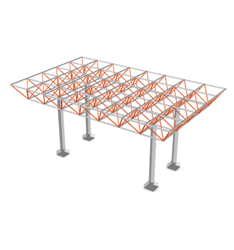
Desenat în 3D,apoi tăiat în oțel. Drawn in 3D,then cut in steel.
Structuri metalice proiectate, fabricate și montate în București. Steel structures designed, fabricated and installed in Bucharest.
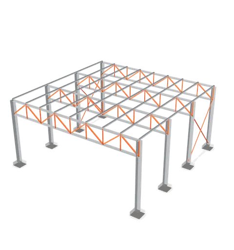
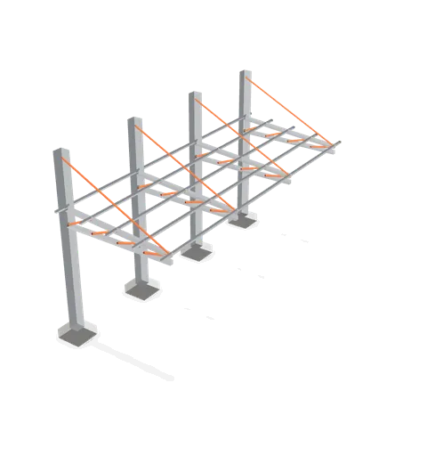
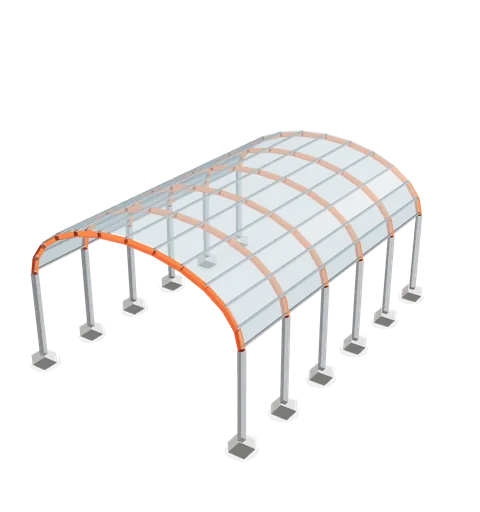
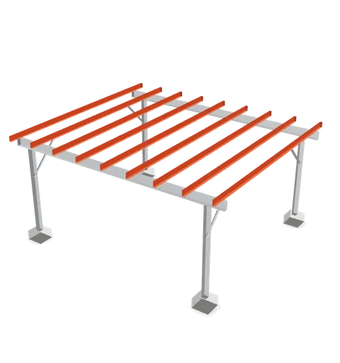
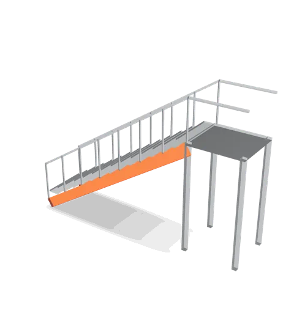
· model și randare demonstrativedemonstration model and render
Din atelier, pe șantier.From the shop to the site.
Structuri spațiale, copertine boltite, cadre zincate între blocuri. Câteva dintre lucrările și modelele ValueSteel, așa cum le-a publicat echipa.Space frames, barrel canopies, galvanised frames going up between apartment blocks. A few ValueSteel jobs and models, as the team shared them.
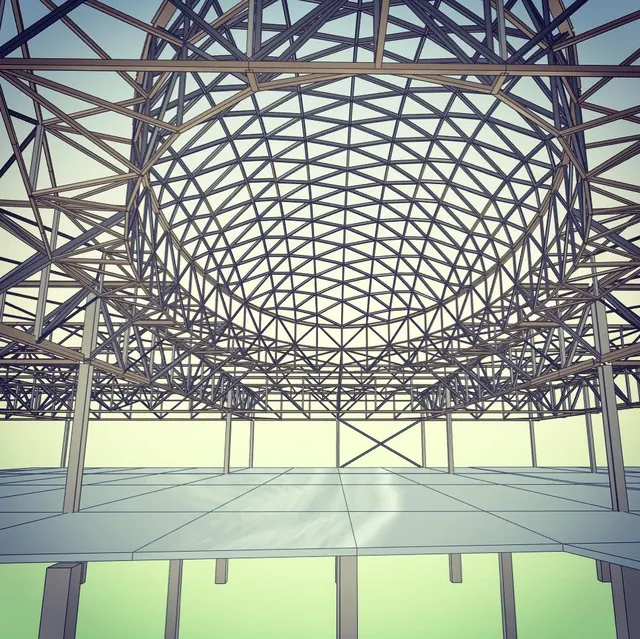
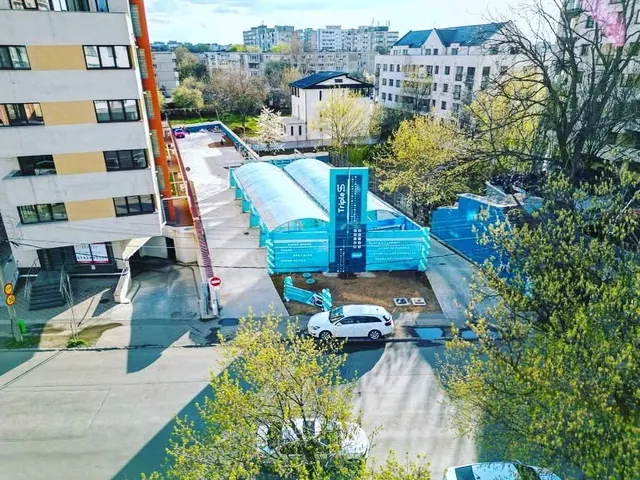
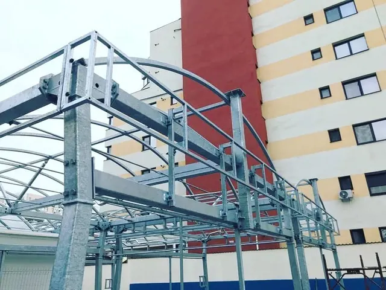
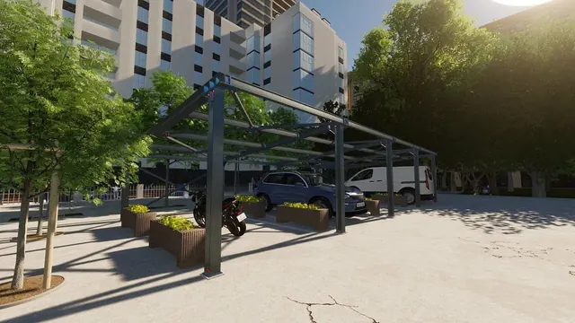
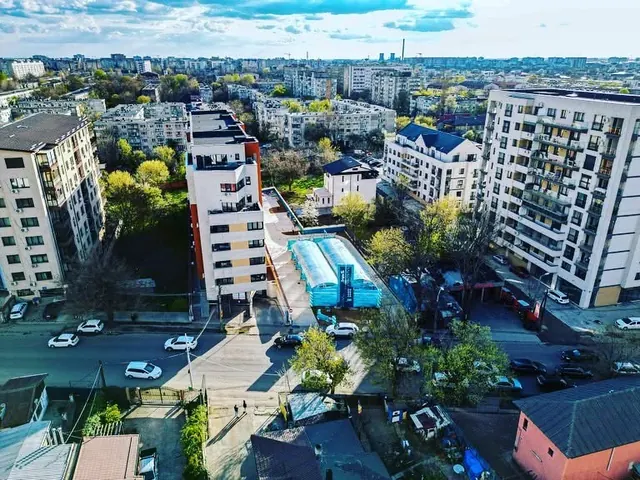
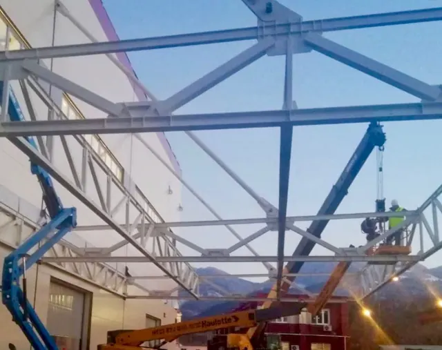
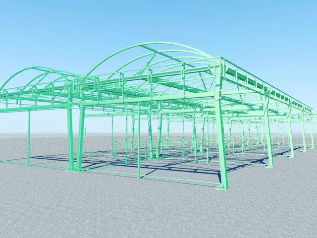
Fotografii de pe șantierele și din modelele ValueSteel. Mai multe lucrări, pe pagina de Facebook.Photos from ValueSteel’s sites and models. More work on the Facebook page.
facebook.com/valuesteel.roCe facem.What we do.
Structura întreagă, de la măsurătoare la ultimul șurub: o singură echipă răspunde de desen, de atelier și de montaj.The whole structure, from the first measurement to the last bolt: one team answers for the drawing, the workshop and the installation.
Structuri metaliceSteel structures
Hale, platforme, structuri spațiale. Proiectate, fabricate în atelierul nostru și montate de echipa noastră.Halls, platforms, space frames. Designed, made in our own workshop and installed by our own crew.
Copertine și pergoleCanopies and carports
Copertine în consolă, boltite sau cu tiranți, pergole auto. Zincate, vopsite, cu policarbonat sau tablă.Cantilevered, barrel or tied canopies, carports. Galvanised or painted, with polycarbonate or sheet roofing.
Scări și platformeStairs and platforms
Scări exterioare și interioare, podeste, balustrade, făcute pe măsura spațiului scanat.Outdoor and indoor stairs, landings and railings, made to fit the space we scanned.
Scanare laser 3D3D laser scanning
Măsurăm ce există cu scanerul laser, nu cu ruleta, ca structura nouă să se potrivească din prima.We measure what is already there with a laser scanner, not a tape, so the new structure fits first time.
Modelare BIMBIM modelling
Toată structura, în 3D, cu fiecare bară și fiecare prindere, înainte să intre ceva în atelier.The whole structure in 3D, every member and every connection, before anything goes into the workshop.
Montaj și mentenanțăInstallation and upkeep
Montăm pe șantier și revenim pentru mentenanța programată sau pentru intervenții neplanificate.We install on site and come back for scheduled maintenance or unplanned repairs.
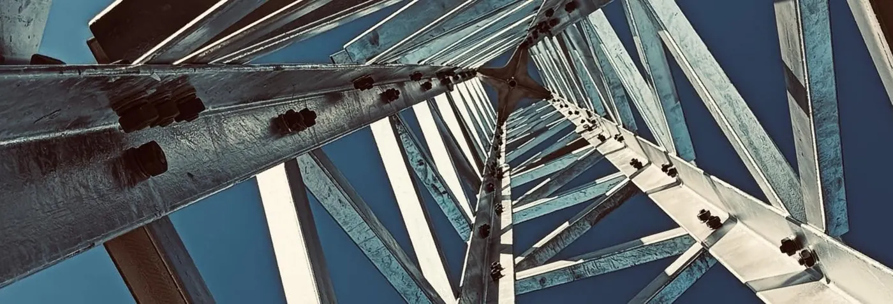
Cum lucrăm.How we work.
Patru pași, de jos în sus, ca o structură. Pozele sunt de pe lucrările noastre.Four steps, from the ground up, like a structure. The photos are from our own jobs.
-
ScanămWe scan
Venim cu scanerul laser și măsurăm spațiul existent: pereți, goluri, scări, tot ce trebuie să se potrivească.We come with the laser scanner and measure the existing space: walls, openings, stairs, everything the steel has to fit.
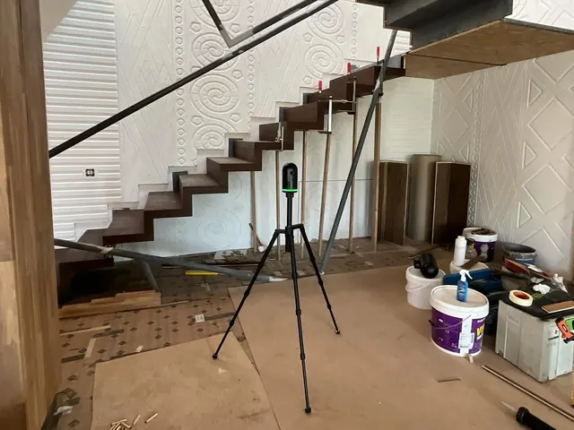
Scanerul, pe terenThe scanner on site 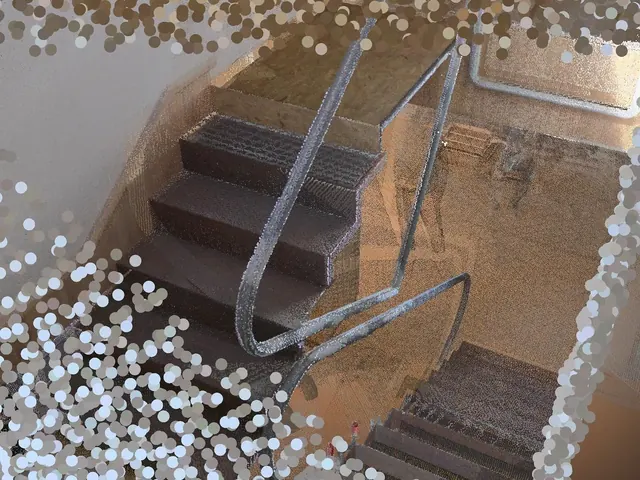
Norul de puncteThe point cloud -
ModelămWe model
Pe scanare desenăm structura în BIM, cu fiecare bară, placă și prindere. Tu o vezi în 3D înainte de atelier.On top of the scan we draw the structure in BIM, every member, plate and connection. You see it in 3D before the workshop does.
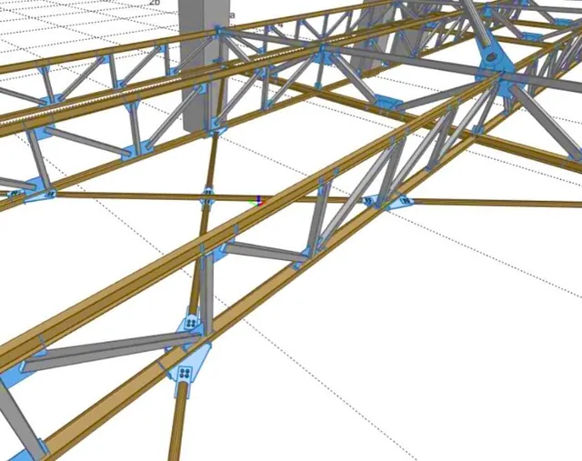
Ferme și prinderi, în BIMTrusses and connections in BIM -
FabricămWe fabricate
În atelierul nostru din București tăiem și sudăm piesele după model, care pleacă apoi zincate sau vopsite.In our Bucharest workshop we cut and weld the parts to the model; they leave galvanised or painted.
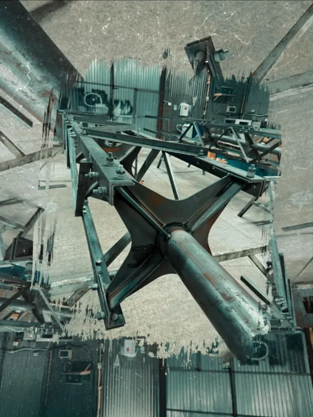
Nod sudatWelded node 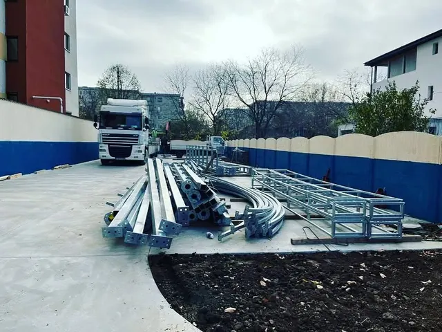
Gata de montajReady to install -
MontămWe install
Echipa noastră montează pe șantier, cu macara sau nacelă, și rămâne la dispoziție pentru mentenanță.Our crew installs on site, by crane or from a lift, and stays on call for maintenance.
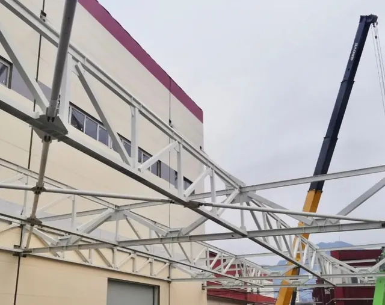
Montaj cu macarauaCrane installation
5,0
Cinci stele din cinci, la fiecare recenzie de pe Google.Five stars out of five, in every review on Google.3 recenzii pe Google Maps, septembrie 20263 reviews on Google Maps, September 2026
Hai să desenăm structura.Let’s draw your structure.
- TelefonPhone0761 984 388
- Emailoffice@valuesteel.ro
- BirouOfficeStr. Soveja 111–113, Sector 1
București - AtelierWorkshopStr. Aeroportului 4–34, Sector 1
București - ProgramHoursLuni de la 08:00 · restul programului, de confirmatMonday from 8:00 · full hours to be confirmed